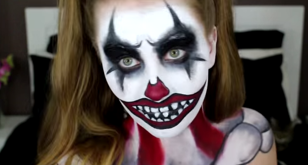

Cheerful and creepy, become you very own Creepy killer clown with this terrifying look.
First apply the make up primer and allow to dry. The begin by apply the white base completely covering your face and neck
Set the base with your loose powder. This wll help prevent streaks and keep your make up prostone for longer
Shade your eyelips and are around you eyes using your black eyeeshadow. Make the creases of your eyes the darkest areas
Use your black cream liner to add details, like diamonds coming from the eyes and eye brows.
Use your black liner to draw a long creepy mouth and and teeth, aloow room to colour lips red.
Draw around the bottom of your nose, allowing space for colour here aswell
Fill in the spaces using your red lipstick/face paint
Add any other detail you wish, fake blood or shading on the neck for example
Fake cuts and wounds add a real scare to any look!